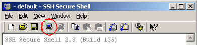
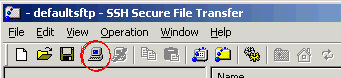

You can connect to a CS UNIX host by telnet to one of the csl2su#.cs.ust.hk
where # is from 1 to 41.
Basically, you can use any telnet program to establish the connection. But
the cssystem recommends using SSH Secure Shell. All the PCs in the CS labs have
SSH Secure Shell installed. To telnet to, for example csl2su5.cs.ust.hk
using SSH Secure Shell, follow these steps:

csl2su5.cs.ust.hk as the host name, and your unix ID as the user name.logout. You also need to click on the "disconnect"
button, which is to the right of "connect".Note: Microsoft Windows also comes with a (insecure) telnet program. You can enter telnet csl2su5.cs.ust.hk in
the DOS prompt to establish a telnet session.
To transfer a file to your CS UNIX account, ftp to one of CS UNIX hosts
mentioned in previous section. Similar to telnet, you can use any ftp program to establish the connection. But
the cssystem recommends using SSH Secure File Transfer. All the PCs in the CS labs have
SSH Secure File Transfer installed. To ftp to, for example csl2su5.cs.ust.hk
using SSH Secure File Transfer, follow these steps:

csl2su5.cs.ust.hk as the host name, and your unix ID as the user name.You can rename files, delete files, create/remove directories and change files access permissions (right-click and choose "properties").
Note: Microsoft Windows also comes with a (insecure) ftp program. You can enter ftp
csl2su5.cs.ust.hk in
the DOS prompt to establish a ftp session. This program requires knowledge of
ftp commands.
In DOS, you can list the files in a directory by using dir. The corresponding UNIX command is ls.
To list in detail the files in a directory, enter ls -l.
To make an empty directory, use the command mkdir dir. The UNIX command
rm can only be used to remove a file. To remove a directory, you must
use rmdir.
There are several commands to edit a text file. The most user-friendly one
is pico. It is easy to use.
Other popular editors are emacs and vi. They are more powerful
but harder to use.
There are several commands to display the content of a text file:
cat |
Display the whole content without stop. |
more |
Display the content page by page. |
less |
Similar to more, but has more functions (e.g. can move backward). |
Example: more libsort.cpp
man cmd.
For example, to show the manual of ls, enter man ls.
A manual is usually longer than one page. So people generally redirect the
output of a man page to more (or less) by pipelining: man ls | more.
If you simply want to redirect the output of a man page to a text file, enter man ls > ls.txt.
This redirection technique can be applied to store the output of a program into a text file.
The c++ compiler in UNIX is called g++. To compile one source
code file, for instance called hello.cpp, enter g++ hello.cpp.
If there is no message then the compilation is success. (In UNIX environment, no
message usually means okay.) The executable binary is called a.out.
You can rename this file by the command mv. You can also specify the executable filename during
the compilation. Suppose you want to name it as "hello". Then enter g++ hello.cpp -o hello.
The SSH programs can be downloaded from cssystem homepage.